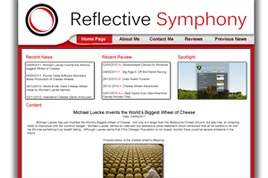

Personal Portfolio
Due to the nature of web design and development, it is only possible to see small versions of each piece in the portfolio. If you click the image of the specific piece you will be able to see a larger version, but not the real size. It is only possible to see the full size of the image in the hidden restricted section of the website.
Shadow on the Sun || Unused Reflective Symphony Web Layout 1 || Unused Reflective Symphony Web Layout 2 || Reflective Symphony Web Layout 1 || Round Table Software Web Layout
Shadow of the Sun
Type: Space Fantasy Art
Time Spent: 10 Hours
Description: I completed this piece simply to practice techniques and filters especially with images, as well as in an attempt to create something I have wanted to do for a while. In the end there are quite a few things I would alter, although for now I am happy on how it turned out.
Unused Reflective Symphony Web Layout 1

Type: Web Layout
Time Spent: 7 Hours
Description: This was my initial layout for Reflective Symphony, although decided not to use it because it did not turn out how I wanted it. I felt it was quite overfilled, so decided to ditch the idea of using it.
Unused Reflective Symphony Web Layout 2
Type: Web Layout
Time Spent: 15 Hours
Description: This was my second attempt for a layout for Reflective Symphony, although once again decided not to use it because of its many limitations. Would not suit people who have a slow connection, as well as anyone with a resolution higher than 1920*1080. Therefore decided to ditch it. In addition to this it reminded everyone who I showed it to of Starcraft II and that was not my intention. Therefore I decided not to use it.
Reflective Symphony Web Layout 1
Type: Web Layout
Time Spent: 6 Hours
Description: This is the first layout of Reflective Symphony. I really felt happy that this is the layout that I launched Reflective Symphony with, as it was clean, effective and most importantly, allowed me to learn the basics of CSS and HTML, which were things I had no skills in prior to this.
Round Table Software Web Layout
Type: Web Layout
Time Spent: 12 Hours
Description: This is a layout I created for Round Table Software, which I have worked closely with and continue to work as a contract web designer in recent times. The challenge I had with this layout was editing the castle image provided to something that looked as though it had no eroded. In addition to this, creating something clean and effective to help sell their services.

{kind=link}
{kind=link}
{kind=link}
{kind=link}
{kind=link}